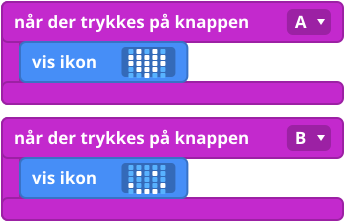
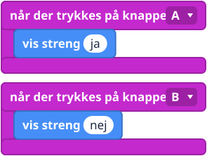
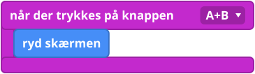

Hvad er det?
Indtil nu har dit program kørt én gang, i starten. En hændelse (event) er noget, der sker, for eksempel et tryk på en knap. En hændelsesblok er en blok, der venter: blokkene inde i den sover, indtil hændelsen sker, og så kører de. Tænk på en dørklokke: der sker ingenting, før nogen trykker på den, og så ringer klokken. Hvert tryk får klokken til at ringe igen, og blokkene inde i den kører igen.
Blokkene
Den her blok ligger i gruppen Input.

Små eksempler



Prøv det her
- Få A til at vise et hjerte og B til at vise en smiley. Tryk på dem i den rækkefølge, du vil.
- Få A+B til at rydde skærmen.
- Lav en knap, der viser dit navn.
Typiske fejl
- Der sker ingenting, når jeg trykker. Blokkene sidder ikke inde i hændelsesblokken. Træk dem ind, så de klikker på plads.
- Lysene bliver ved med at vise det gamle billede. Lysene bliver, som de er, indtil noget ændrer dem. Tilføj ryd skærmen (clear screen), eller vis noget nyt.
- Programmet startede forfra. Du har trykket på reset-knappen på bagsiden. Det er helt normalt.
Koden skrevet som tekst
JavaScript: input.onButtonPressed(Button.A, function () {
basic.showIcon(IconNames.Heart)
})
Python: def on_button_pressed_a():
basic.show_icon(IconNames.HEART)
input.on_button_pressed(Button.A, on_button_pressed_a)
V1 og V2
Knapperne virker på samme måde på begge. Kun V2 Guldlogoet på forsiden af en V2 kan også bruges som en berøringsknap. Brug blokken på logo trykket (on logo pressed).
Lærernoter
- Tid: cirka 20 minutter.
- Det lærer de: hændelser (kode, der venter og så reagerer), og forskellen på kode, der kører én gang, og kode, der venter.
- Typisk misforståelse: børnene forventer, at knapblokkene kører oppefra og ned ligesom når programmet starter.
- Billederne af blokkene er forenklede tegninger. Tjek de rigtige blokke i MakeCode.